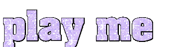
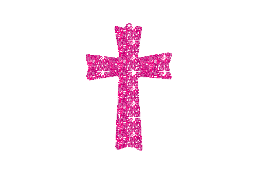

para que se viste asi
para que anda sola
para que se pone borracha
que hacia tan tarde
ella se lo busco
es su culpa por no cuidarse


Este proyecto se llevo a cabo gracias a:
Sistema de Apoyos a la Creación y Proyectos Culturales (SACPC) Beca Jovenes Creadores 2021
Cristina Maldonado tutora en Nuevas Tecnologias Jovenes Creadores 2021.
Gris Cuevas gran amiga y colaboradora del proyecto.
Irene Soria por su perspectiva en hackfeminismo por la donacion del archivo .PKL.
Deyanira Morales al acceder a que su trabajo de investigacion "La emocionalidad del activismo digital feminista: casos de La brillanteada y la movilización del 8M2020" para ser mostrado en este website.
Malitzin Cortes y Angela Leyva increibles artistas que me aconsejaron durante todo este proceso.
Jaime Lobato por enseñarme y asesorarme siempre.
Moises Sanabria por su apoyo incondicional.